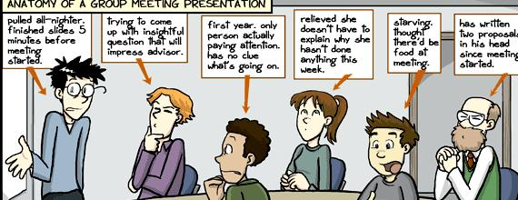

Welcome to the VRL Lab manual! I am trying to keep this document up-to-date for sharing useful information on how our group operates. Please share your suggestions and experiences to make this document useful as possible.
There are couple of things that we request from all our members. You can find information and the instructions below.
Students must have a website. I recommend using your institutional webspace as well with a simple redirection to point your own domain name.
There are several free options for hosting your own page. I prefer Github Pages. You can also look for academic website templates like this or this one.
Our lab has a private event calendar where we schedule group meetings, seminars, social activities, etc. Please ask for access.
This website contains information about our members, publications, resources etc. We share these content on a Github project. You can make a pull-request for the changes. You should update the file for members and upload a picture of yours to include your profile on the website.
We condict regular group meeting where everyone will have an opportunity to present their work and get feedback from their labmates. Please be active, share your opinions and give constructive feedback. 
If you would like to meet one-on-one to discuss about research, courses or career advice, we can schedule a time for this. Please don't hesitate sending an email.